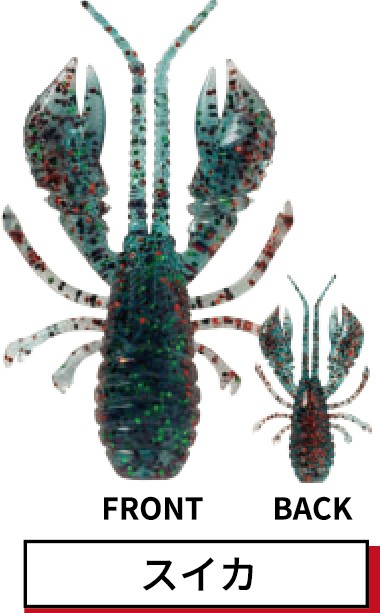
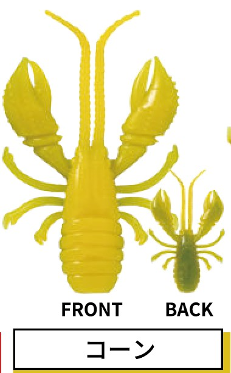
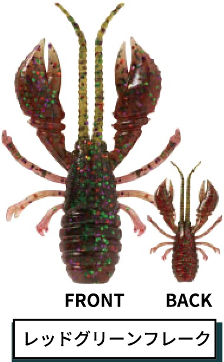
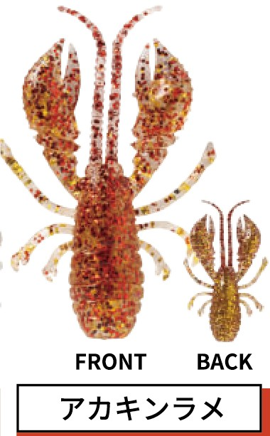
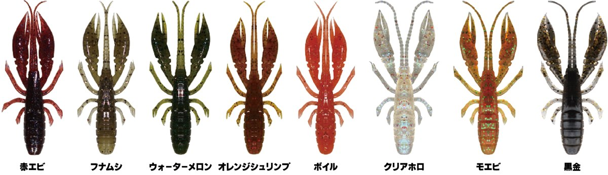

根魚&チヌ喰い蝦
根魚&チヌ喰い蝦はRUDIE'S（ルーディーズ）の甲殻類ワームです。
ハタ類の根魚からチヌに照準を合わせた、一口サイズ1.6インチの甲殻類ワームです。体積のあるボディシルエットで、喰わせやすい小さいサイズでありながら存在感のあるアピールを実現。強烈なエビフレーバーを配合していて、あらゆる甲殻類捕食者に効果的です。同じRUDIE'Sの「ハタ喰い・蝦」よりひと回り小さく、食わせに寄せたモデルです。

画像出典:RUDIE'S公式HP
スペック
- メーカー
- RUDIE'S（ルーディーズ）
- タイプ
- 甲殻類ワーム（エビ型）
- サイズ
- 1.6inch
- 入数
- 5本
- カラー
- 全6色
- 特徴
- 強烈なエビフレーバー配合
- 推奨フック
- 根掛かり軽減J・H
- ターゲット
- カサゴ・チヌ・メバル・ソイ・ハタ・アイナメなど
- 価格
- 500円（税別）
▼今すぐチェック

根魚&チヌ喰い蝦の特徴
小さくても存在感がある、一口サイズの甲殻類
-
喰わせやすい一口サイズ
1.6インチの小さなサイズで、口の小さなチヌやメバル、スレた根魚にも口を使わせやすい。
-
存在感のある体積ボディ
体積のあるボディシルエットを採用していて、小さくても存在感のあるアピールができる。
-
強烈なエビフレーバー
強烈なエビフレーバーを配合し、根魚からチヌまで、あらゆる甲殻類捕食者に効く。
根魚&チヌ喰い蝦の使い方
推奨フックの「根掛かり軽減J・H」にセットして、ボトムを取ってからズル引きや小さなリフト＆フォールで底のエビを演出するのが基本です。
根掛かり軽減J・Hはブラシが杖代わりになって横倒れを防ぎ、根掛かりも減らせる設計。チヌを狙う時は、ボトムを一定の速度でゆっくり引くのがコツです。
根魚&チヌ喰い蝦の得意な状況
堤防の際やテトラ帯のカサゴ・ソイ・ハタなどの根魚、汽水域や港湾部のボトムにいるチヌを狙う状況が得意です。
大きめのワームに反応しない時や、魚のサイズが小さい時に、食わせの1本として持っておくと便利です。
ワンポイント
根掛かり軽減J・Hは、針をカスタマイズしたい時や傷んだ時に簡単に交換できます。同じRUDIE'Sの「ハタ喰い・蝦」（2.5〜3.5インチ）と、魚のサイズや反応で使い分けるのもオススメです。
オススメカラー
根魚&チヌ喰い蝦は全6色。そのうち4色を紹介します。

スイカグリーン系のボディに赤のフレーク。チヌのボトムゲームで使いやすいナチュラル系。

コーン目立つイエロー。濁りの時やアピールを上げたい時に。

レッドグリーンフレーク赤系のボディにグリーンのフレーク。根魚狙いの定番の赤系。

アカキンラメ赤金のラメ入り。ローライトや濁りでのアピールに。
画像出典:RUDIE'S公式HP
根魚&チヌ喰い蝦に似ているルアー
-

ハタ喰い・蝦 RUDIE'S 詳細はこちら＞同じRUDIE'Sのエビ型ワーム（2.5〜3.5インチ）。大きめのハタを狙う時に。
-
 シルバーウルフ アーバンクローラー2.5
DAIWA
詳細はこちら＞
シルバーウルフ アーバンクローラー2.5
DAIWA
詳細はこちら＞
フリーリグチニング専用のクロー系ワーム。チヌをメインに狙う時に。
-
 クレイジーフラッパー2.8インチ
KEITECH
詳細はこちら＞
クレイジーフラッパー2.8インチ
KEITECH
詳細はこちら＞
ウデが大きく動くクローワーム。アピールを強めたい時の持ち替え先に。